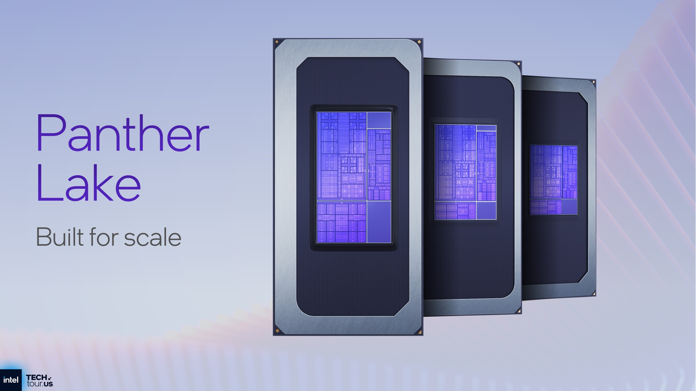

Published: January 27, 2026
Intel’s upcoming Panther Lake generation may be one of the most important CPU launches in the company’s modern history. After years of manufacturing delays, architectural resets, and aggressive competition from AMD and Apple, Panther Lake represents Intel’s attempt to reset the narrative.
But 2026 is not the same market Intel once dominated. AMD’s Zen roadmap is stable and aggressive. Apple’s silicon now leads in efficiency and integration. The question is simple: can Panther Lake realistically close the gap — or is Intel now permanently in catch-up mode?
What Panther Lake is supposed to fix
Panther Lake is built on Intel’s next-generation process and is expected to unify mobile and desktop strategies more tightly than previous generations. Early briefings suggest a strong focus on efficiency, improved AI acceleration, and better scalability across form factors.
Why it matters: Intel can no longer rely on brute-force clock speeds. Efficiency per watt is now the core battlefield.
The AMD problem: consistency beats ambition
AMD’s strength over the last five years has not been single breakthroughs, but consistency. Each Zen generation has arrived on time, delivered predictable gains, and scaled cleanly from laptops to servers.
If Panther Lake slips — even by a quarter — AMD is positioned to capitalize immediately.
Apple’s silent pressure on the high end
Apple’s custom silicon does not compete directly in raw desktop performance, but it redefines expectations for power efficiency, integration, and sustained performance under load. This has forced Intel to rethink how it defines leadership.
Manufacturing: the real battle is in the fabs
More than architecture, Panther Lake’s success depends on Intel’s manufacturing execution. Process stability, yields, and volume ramp will determine whether the product is competitive in real shipments, not just benchmarks.
Can Panther Lake realistically win?
Winning no longer means dominating every segment. For Intel, success may simply mean restoring credibility: predictable launches, competitive efficiency, and a roadmap customers can trust again.
If Panther Lake hits its targets, Intel stabilizes. If it misses, the strategic consequences extend well beyond a single product cycle.
Final verdict
Panther Lake is not just a CPU generation — it is a referendum on Intel’s turnaround strategy. In 2026, Intel is no longer defending a throne. It is fighting to prove it still belongs in the race.